バルクオーダー：注文〜納品まで
１．注文書をもらうには
オーダー（注文）を受けるには以下の2つの方法があります。
- NPC鍛冶屋または裁縫屋に何回かアイテムを売る。
- NPC鍛冶屋または裁縫屋をクリックしたときに出る選択コマンドから「バルクオーダー」を選択する。
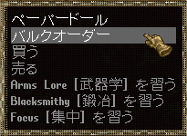
注文を出すNPCは以下の職業表示となっています。
鍛冶
- Blacksmith
- Blacksmith guildmaster（guildmistress）
- Armourer
- Weaponsmith
キャラクターに裁縫や鍛冶スキルが0.1以上あれば、上の方法により、注文の内容を表示した画像が表示されます。
下の画像は「Shadow ingotで高品質（exceptional）のRing leggingsを10着作って欲しい。」という注文書です。
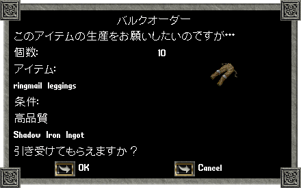
表示された注文を受ける場合は「OK」を、受けないときは「Cancel」を押します。
NPCの鍛冶屋または裁縫屋が注文を出す間隔は、Publish74より6時間毎となり、最大で3枚（18時間分）貯められるようになりました。
また、手持ちの注文書を納品した場合、注文書が1枚スタックされます。
ただし、受けられる注文書が3枚たまった状態で納品した場合、受けられる注文書は4枚にならず、3枚のままです。
注文の内容は、スキル値によって下表のようになっています。
古代ハンマーを装備して見た目のスキルを上げても、受け取る注文の内容は補正前のスキルに沿ったものとなります。
例えば、実スキル40に古代ハンマー＋60を装備して見た目のスキルを100にしても、スキル40相当の注文しか貰うことはできません。
| スキル |
注文の内容 |
| 0.1〜69.9 |
- 鍛冶 ： 自分のスキルで作成成功率が30.2〜70％となる装備品のどれかが注文されます。
- 裁縫 ： 自分のスキルで作成成功率が50〜70％となる装備品のどれかが注文されます。
- 注文は小口のみとなります。
- 品質の指定はありません（標準品質のみ）
- 素材の指定はありません（Iron、ClothまたはNormal leatherのみ）
|
| 70.0〜99.9 |
- 全ての装備品（UO-Rまで）の中からどれかが注文されます。
- 小口だけでなく大口の注文を受けることがあります。
- 品質を指定されることがあります。
- 素材を指定されることがあります。
- スキルが上がれば高品質や高級素材を必要とする注文が出現しやすくなります。
|
| 100.0以上 |
- 全ての装備品（UO-Rまで）の中からどれかが注文されます。
- 小口だけでなく大口の注文を受けることがあります。
- 品質を指定される確率が特別に高くなります。鍛冶の場合、高品質指定の注文が50％程度になります。
- 素材を指定されることがあります。鍛冶の場合、素材指定の注文が30％程度（全注文に対し）になります。
- 鍛冶スキルが110および120で、素材指定の確率がさらに上昇するようになります。
鍛冶110 ： 全注文に対し35％程度（全防具系注文に対しては70％程度）
鍛冶120 ： 全注文に対し45％程度（全防具系注文に対しては90％程度）
|
２．ヤミ取引
Publish74より、NPCとバルクオーダーの内容に関するヤミ取引をすることができます。
1．NPCをクリックし、「賄賂」を選択し、NPCに見せたい注文書をターゲットに指定する。
大口／小口ともに可能だが、注文書には何も結合していない状態でなければならない。
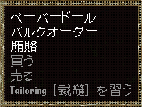
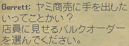
2．NPCが注文の内容に応じた金額を要求する。
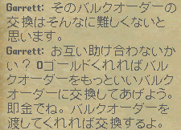
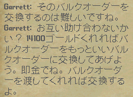
3．1で指定した注文書を、NPCに渡す。
4．銀行からお金が引き落とされ、渡した注文書の品質／素材／数量のどれかが１ランクが上昇する。
数量20、高品質、最上級素材がそれ以上ランクアップすることはない。
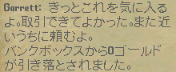
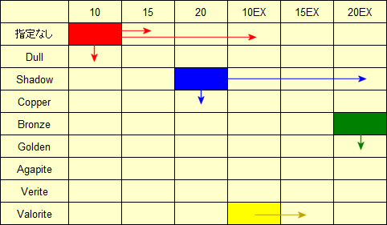
5．1〜4を繰り返していくうちに、NPCが生産ギルドに目をつけられ、一時的に闇取引できなくなる。
ほとぼりが冷めるまで、実時間で2時間程度は必要で、プレイヤー側で強制的に解除する方法はない。
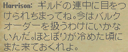
闇取引の要求金額（概算）
下の表は、闇取引したい注文書とNPCが要求する基本金額（概算）を表したものです。
要求する金額は、NPCにとって何回目の闇取引回数かにおおよそ比例しています（100gp未満切捨）。
たとえば、以前に闇取引を9回していたNPCに取引を持ちかけると、基本金額の10倍程度を要求してきます。
時間による低減もありますが、要求金額に対してわずかなものです。
鍛冶小口
数量
＼
素材 |
10 |
15 |
20 |
10EX |
15EX |
20EX |
| 武器 |
|
|
|
|
|
--- |
| 防具Iron |
5 |
10 |
20 |
15 |
25 |
40 |
| Dull |
|
55 |
125 |
90 |
160 |
280 |
| Shadow |
65 |
|
250 |
180 |
320 |
550 |
| Copper |
100 |
|
375 |
280 |
480 |
820 |
| Bronze |
125 |
220 |
500 |
360 |
650 |
1100 |
| Gold |
160 |
280 |
625 |
450 |
800 |
1380 |
| Agapite |
200 |
330 |
750 |
550 |
960 |
1660 |
| Verite |
220 |
380 |
875 |
640 |
1120 |
1970 |
| Valorite |
500 |
875 |
1500 |
1120 |
1970 |
--- |
鍛冶大口
小口の5倍程度です
数量
＼
素材 |
10 |
15 |
20 |
10EX |
15EX |
20EX |
| 武器 |
50 |
80 |
150 |
120 |
200 |
--- |
| 防具Iron |
25 |
40 |
100 |
75 |
125 |
225 |
| Dull |
150 |
275 |
625 |
475 |
825 |
1425 |
| Shadow |
320 |
550 |
1250 |
925 |
1650 |
2825 |
| Copper |
480 |
825 |
1880 |
1425 |
2450 |
4225 |
| Bronze |
625 |
1100 |
2500 |
1875 |
3275 |
5625 |
| Gold |
780 |
1380 |
3120 |
2325 |
4100 |
7025 |
| Agapite |
925 |
1650 |
3750 |
2825 |
4900 |
8450 |
| Verite |
1100 |
1920 |
4380 |
3275 |
5725 |
9850 |
| Valorite |
2500 |
4380 |
7500 |
5625 |
9850 |
--- |
裁縫小口
数量
＼
素材 |
10 |
15 |
20 |
10EX |
15EX |
20EX |
| 布 |
10 |
20 |
35 |
25 |
40 |
--- |
| 標準革 |
|
10 |
25 |
20 |
30 |
50 |
| Spined |
75 |
140 |
325 |
250 |
450 |
750 |
| Horned |
150 |
280 |
650 |
480 |
860 |
1480 |
| Barbed |
480 |
860 |
1480 |
1100 |
1940 |
--- |
裁縫大口
小口の10倍程度です
数量
＼
素材 |
10 |
15 |
20 |
10EX |
15EX |
20EX |
| 布 |
100 |
175 |
300 |
225 |
400 |
--- |
| 標準革 |
|
|
200 |
150 |
260 |
450 |
| Spined |
825 |
1450 |
|
2500 |
4375 |
7500 |
| Horned |
|
2925 |
6675 |
5000 |
8750 |
15000 |
| Barbed |
5000 |
8750 |
15000 |
11250 |
19700 |
--- |
２．注文を完成させる
鍛冶および裁縫の注文書は大口と小口の2種類あり、それぞれ完成させる方法が異なっています。
（１）小口の注文（Small bulk order）
小口の注文は、注文書に書かれた1種類のアイテムを作る形式です。
数量・品質・使用する素材に注意して作れば、問題なく完成させることができます。
- 下の画像1は、内容が「高品質のWar fork15本を作成する」という小口注文です。
- 注文書(Deed)をダブルクリックしたときに出てくる「アイテムを登録する（英語ではCombine this deed・・・）」のボタンを押します。
- ターゲットカーソルを注文書の要求しているものに合わせます（画像2）。
War forkを1本だけ注文書に組み込むと、画像1のWar forkの右の数字が0から1となります。引き続き、War forkをDeedに組み込んでいきます。
- 必要な数（ここでは15本）だけ組み込むと、それ以上注文書にWar forkを組み込むことができなくなります。
- 完成させた注文書をNPCの鍛冶屋に直接渡せば、その注文は完了となります。
画像1
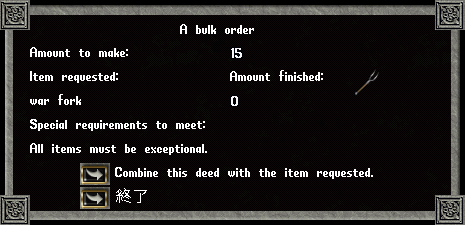
画像2
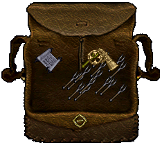
（２）大口の注文（Large bulk order）
大口の注文は、注文書に書かれた2種類以上の小口注文書を完成させ、それらを組み込む形式です。
複数枚の注文書が必要となるため、小口注文よりも難易度が高く、大口注文でしか得られない高級な報酬品もあります。
- 下の画像3は、内容が「高品質のDagger、Kryss、Warfork、Short spear、Spear15本のセットを作成する」という大口注文です。
- 大口注文に書かれた数量・品質・使用する素材に注意して、大口注文書に組み込むための小口注文書を完成させます。
- 大口注文書をダブルクリックしたときに出てくる「Combine this deed with another deed」のボタンを押します。
- ターゲットカーソルを注文書の要求しているものに合わせます（画像4）。
War forkの小口注文書を組み込むと、画像1のWar forkの右の数字が0から15となります。引き続き、他の小口注文書を組み込んでいきます
- 必要な小口注文書を全て組み込むと、それ以上注文書に小口注文書を組み込むことができなくなります。
- 完成させた注文書をNPCの鍛冶屋に直接渡せば、その注文は完了となります。
| 大口の種類 |
必要なDeed |
Plate系防具
(全7枚) |
Platemail系大口
Plate gorget
Plate gloves
Plate arms
Plate helm
Plate legs
Plate tunic |
Chain系防具
(全4枚) |
Chainmail系大口
Chain coif
Chain legs
Chain tunic |
Ring系防具
(全5枚) |
Ringmail系大口
Ring gloves
Ring sleeves
Ring legs
Ring tunic |
Sword系武器
(全7枚) |
Sword系大口
Broad sword
Cutlass
Katana
Long sword
Scimitar
Viking sword |
| 大口の種類 |
必要なDeed |
Axe系武器
(全7枚) |
Axe系大口
Axe
Battle axe
Double axe
Executioner's axe
Large battle axe
Two handed axe |
Fencing系
武器(全6枚) |
Fencing系大口
Dagger
Kryss
Short spear
Spear
War fork |
Mace系武器
(全7枚) |
Mace系大口
Hammer pick
Mace
Maul
War hammer
War axe
War mace |
Pole系武器
(全3枚) |
Pole系大口
Bardiche
Halberd |
画像3
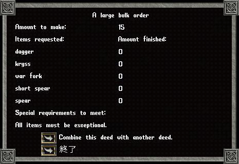
画像4
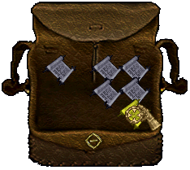
３．報酬品
大口、小口に関わらず、完成させた注文書を対応するNPCに渡すことで、報酬品（gp＋アイテム＋名声）を獲得できます。
獲得できる報酬品は注文の難易度によって決まっています。注文の難易度を決めている要素は以下の項目です。
- 品質 ： 高品質 or 標準品質（指定無）
- 素材 ： 特殊素材 or 標準素材（指定無）
- 数量 ： 10、15、20
- 注文の種類 ： 大口 or 小口
注文の内容に対する報酬品は、報酬順引きにて確認できます。
４．Bulk Order Book（バルクオーダーブック）
バルクオーダーブックはPublish19以降、書写スキルにより作成可能となっています。
作成にはBlank Scrollが10本必要です。
（１）注文書（Deed）を入れる
- バルクオーダーブックに注文書をドロップすると、バルクオーダーブックの中に注文書の内容が登録されます。
- 裁縫と鍛冶の注文書を1冊のバルクオーダーブックに混ぜても問題ありません。
- バルクオーダーブックにいれた注文書は、5枚で1アイテムの扱いとなります（最大で100アイテム分）。
- バルクオーダーブックには最大で500枚の注文書を入れることができます。
- アイテムプロパティ画面で、バルクオーダーブックに入っている注文書の枚数が確認できます。
- バルクオーダーブックをクリックすると「書名変更」のコマンドが現れ、書名を入力することができます（Runeの名前をつけるタイプ）。
Publish56より、全角文字にも対応可能となる予定です。
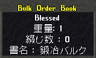
（２） バルクオーダーブックから注文書を探す
- バルクオーダーブックをダブルクリックすると、収められている注文書の一覧が表示されます(画像-1)。
- 左上にある「Set Filter」を選ぶと、画像-2のようなFilter設定画面となります。
- ここで設定を変えることにより、本を開いたときに表示するDeedを絞ることができます。
- 種類・・・全体(大口＋小口)／小口のみ／大口のみの表示
- 品質・・・全体(標準＋高品質)／標準のみ／高品質のみの表示
- 素材・・・鍛冶Deed／裁縫Deed全体表示
スキル別に材質(Iron〜Valorite／Cloth, Normal leather〜Barbed leather）ごとの表示
- 数量・・・全体(10＋15＋20)／10のみ／15のみ／20のみの表示
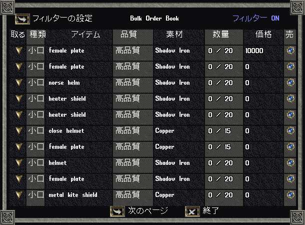
画像-1 Deed表示部分 |
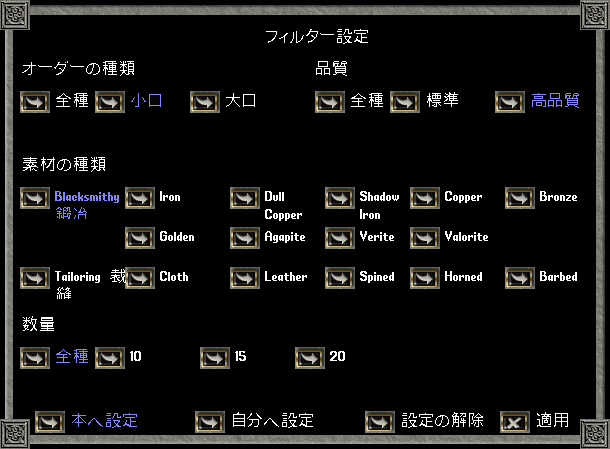
画像-2 Filter設定部分 |
（３） バルクオーダーブックの中にある注文書を売る(PCベンダー)
バルクオーダーブックに入れた注文書をPCベンダーで販売することができます。
- 自分のバックパックに入っているバルクオーダーブックをダブルクリックし一覧表示させます。
- 注文書一覧の右のほうにある青いボタン(「売」の下にあります)を押します（注文書1枚ごとにボタンがついています）。
- 価格を入力します。入力が完了したものは画像-1のように値がつけられます。
- 売る注文書が入ったバルクオーダーブックをベンダーにおきますが、
本自体には価格をつけないようにします(本を置いたら[Esc]ボタンを押すとよい)。
- バルクオーダーブックの中にある注文書をPCベンダーから買う場合、注文書一覧で「買」の下にあるボタンを押して買うことになります。
（４） バルクオーダーブックの表紙を変える
UO11周年記念パッケージ内のアイテムとして、Bulk order cover（全12種、各30チャージ）を入手することができます。
Bulk order coverを使い、バルクオーダーブックの色を変えることができます。
| Cover |
本 |
Normal |
|
Dullcopper |
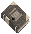 |
Shadow |
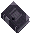 |
Copper |
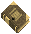 |
Bronze |
|
| Cover |
本 |
Gold |
|
Agapite |
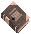 |
Verite |
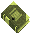 |
Valorite |
|
| Cover |
本 |
Spined |
|
Horned |
|
Barbed |
|